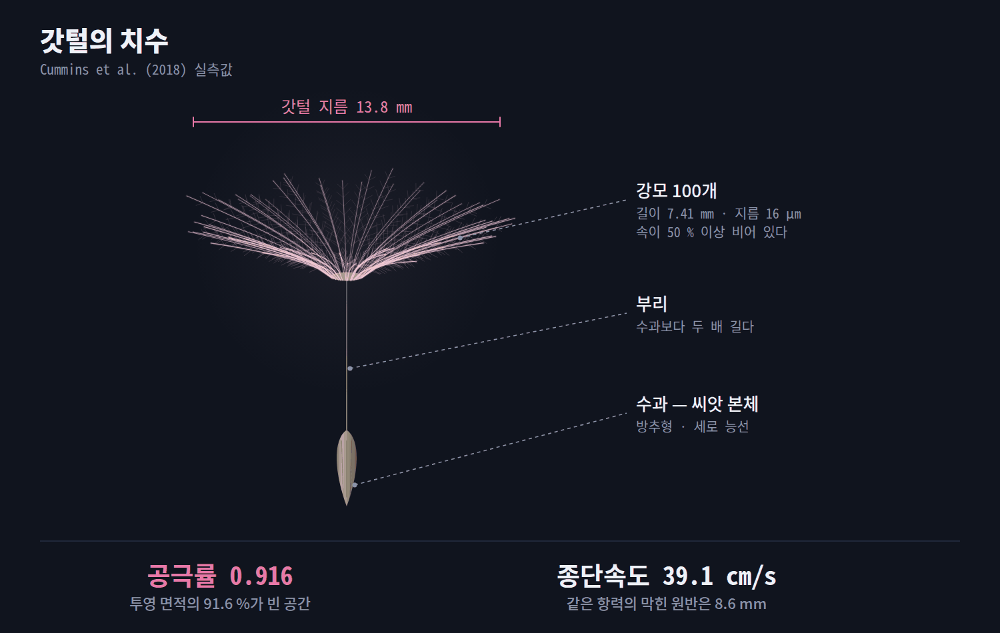
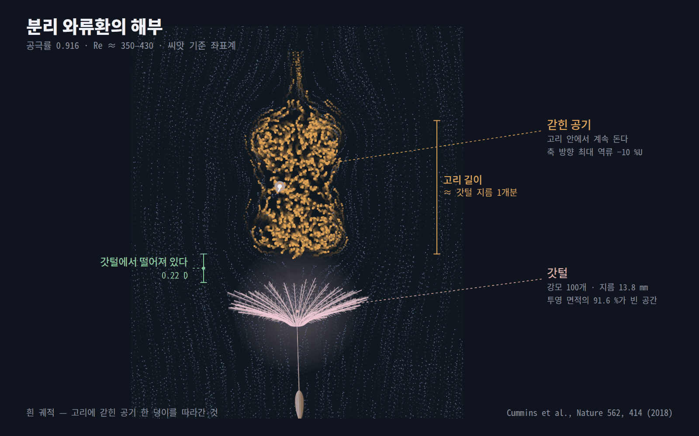
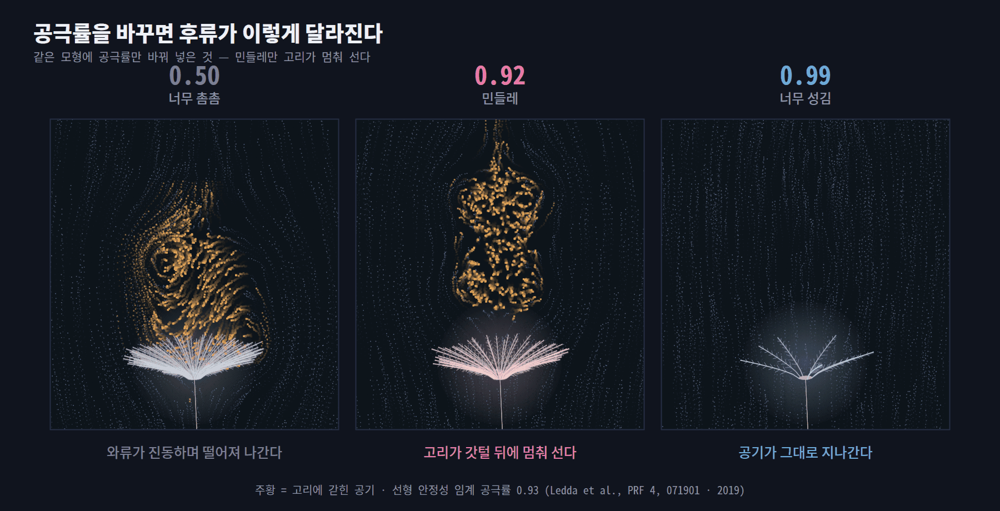

갓털은 날씨를 읽는다
습해지면 갓털이 오므라들어 낙하속도가 2~3배 빨라지고, 씨앗이 잘 떨어지지도 않습니다. 씨앗 밑 원판의 조직들이 서로 다른 정도로 물을 먹으며 갓털을 접습니다. 분산 모형에 실제 기상 자료를 넣으면 중앙 분산거리가 3.9 m에서 4.8 m로 늘어납니다.
낙하산은 공기를 막아서 뜹니다. 그런데 민들레 갓털은 투영 면적의 91.6%가 빈 공간이고, 공기는 그 사이로 그냥 새어 나갑니다. 그런데도 더 잘 뜹니다. 정반대의 방법으로 같은 일을 해내는 셈입니다.
「홀씨」는 원래 포자를 가리키는 말이라 식물학적으로는 정확하지 않습니다. 이 글에서 다루는 것은 갓털(관모)이 달린 씨앗, 즉 수과입니다. 제목은 굳어진 관용에 따랐습니다.
소리를 켜고 보세요. 1분 6초입니다.
영상에서 확인할 세 가지
낙하산은 막아서 뜨고, 갓털은 통과시켜서 뜹니다. 강모 100개가 차지하는 면적은 전체의 8.4%뿐입니다.
붙어 있지도, 떠내려가지도 않는 고리입니다. 2018년에 자연에서 처음 확인된 흐름입니다.
더 촘촘하면 고리가 진동하며 떨어져 나가고, 더 성기면 공기가 그냥 지나갑니다.
먼저 크기를 봅니다. 손가락 한 마디만 한 이 구조가 1초에 39 cm씩 내려옵니다. 걷는 속도의 약 4분의 1입니다.

| 항목 | 측정값 | 비교 |
|---|---|---|
| 갓털 지름 | 13.8 mm | 손가락 한 마디 |
| 강모 개수 | 100개 | 95 ~ 106개 |
| 강모 길이 · 지름 | 7.41 mm · 16 μm | 머리카락의 약 5분의 1 굵기 |
| 공극률 | 0.916 | 투영 면적의 91.6%가 빈 공간 |
| 종단속도 | 39.1 cm/s | 걷는 속도의 약 4분의 1 |
Cummins et al. (2018)의 실측값입니다. 강모는 속이 50% 이상 비어 있어, 재료를 쓴 양은 이 수치보다도 더 적습니다.
공기가 새어 나가는데도 왜 떠 있을까요. 답은 갓털 전체가 아니라 강모 한 가닥의 크기에 있습니다.
| 기준 길이 | 레이놀즈수 | 그 스케일에서 벌어지는 일 |
|---|---|---|
| 갓털 지름 13.8 mm | Re ≈ 350 ~ 430 | 후류에 큰 소용돌이가 생길 수 있는 영역 |
| 강모 지름 16 μm | Ref ≈ 0.42 | 점성이 관성을 압도 — 경계층이 두껍게 부푼다 |
Ref = U · d / ν = 0.391 × 16×10⁻⁶ / 1.5×10⁻⁵ ≈ 0.42
강모 한 가닥의 레이놀즈수가 1보다 작다는 것이 이 이야기의 출발점입니다
레이놀즈수가 1보다 작으면 점성이 지배해 경계층이 강모 지름보다 훨씬 두껍게 자랍니다. 강모 사이 간격보다 껍질이 두꺼워지면 이웃한 껍질끼리 겹치고, 그 겹친 영역이 반쯤 열린 막처럼 작동합니다. 공기가 완전히 막히지도, 자유롭게 통과하지도 않는 상태입니다.
이 중간 상태가 핵심입니다. 완전히 막으면 후류가 불안정해지고, 완전히 통과시키면 붙잡을 것이 없습니다. 갓털은 공기를 느리게 통과시키는 쪽을 택했습니다.
느려진 채로 빠져나간 공기는 갓털 뒤에서 고리 모양으로 말립니다. 그리고 그 고리가 그 자리에 멈춰 섭니다.

보통 물체 뒤의 소용돌이는 둘 중 하나입니다. 몸체에 붙어 있거나, 떨어져 나가 하류로 흘러가거나. 민들레의 고리는 둘 다 아닙니다. 갓털에서 떨어져 있으면서, 흘러가지도 않고 일정한 거리에 정지합니다. 논문은 이것을 “유체에 잠긴 물체 주위 흐름의 새로운 분류”라고 표현했습니다.
| 고리의 성질 | 값 | 뜻 |
|---|---|---|
| 갓털 끝과의 간격 | 약 0.22 D | 붙어 있지 않다 — 그래서 “분리” |
| 흐름 방향 길이 | 약 1.0 D | 갓털 지름 한 개분 |
| 축 방향 최대 역류 | −10 %U | 고리 한가운데서는 공기가 거꾸로 내려온다 |
D는 갓털 지름(13.8 mm), U는 자유류 속도(종단속도 39.1 cm/s)입니다. 위 그림의 유동장은 이 세 값에 맞춰 보정한 모형으로 그렸습니다.
공극률만 바꿔 보면 답이 보입니다. 민들레의 값은 우연이 아니라 흔들리기 시작하는 한계선 바로 앞입니다.

Ledda 등(2019)은 다공 원반 주위 흐름의 선형 안정성을 풀어, 공극률이 약 0.93을 넘으면 모든 레이놀즈수에서 후류가 정상·축대칭으로 유지된다는 결과를 얻었습니다. 그보다 촘촘하면 임계 레이놀즈수를 넘는 순간 와류가 진동하며 떨어져 나갑니다.
숫자를 단정하지는 마세요. Cummins의 실측 공극률은 0.916, Ledda의 임계값은 0.93입니다. 두 값은 정의와 모형이 조금 다르므로 소수점 둘째 자리로 대소를 따지는 것은 의미가 없습니다. 확실한 것은 민들레가 안정성이 무너지는 문턱 근처에 있고, 그 바로 앞에서 항력을 최대로 끌어냈다는 쪽입니다.
가장 자주 잘못 인용되는 대목입니다. 기준을 정하지 않으면 같은 사실이 정반대로 읽힙니다.
종단속도 39.1 cm/s에서 지름 13.8 mm 갓털과 같은 항력을 내는 막힌 원반의 지름은 8.6 mm입니다. 이 하나의 사실을 두 가지 기준으로 나눠 보면 이렇게 갈립니다.
| 기준 | 갓털 | 같은 항력의 막힌 원반 | 비 |
|---|---|---|---|
| 지름 | 13.8 mm | 8.6 mm | — |
| 투영 면적 | 149.6 mm² | 58.1 mm² | 0.39배 |
| 실제 고체(재료) 면적 | 12.6 mm² | 58.1 mm² | 4.6배 |
갓털의 고체 면적 = 투영 면적 149.6 mm² × (1 − 0.916) = 12.6 mm².
“단위 면적당 항력 네 배”는 재료 면적 기준입니다. 투영 면적으로 따지면 갓털이 오히려 불리합니다(0.39배). 민들레가 뛰어난 지점은 「같은 크기에서 더 큰 항력」이 아니라 「같은 재료로 훨씬 큰 항력」입니다. 강모가 속까지 절반 넘게 비어 있다는 점을 감안하면 격차는 더 벌어집니다.
1분짜리 숏츠에서는 넘어갔지만, 민들레의 비행에는 아직 세 갈래가 더 있습니다.
습해지면 갓털이 오므라들어 낙하속도가 2~3배 빨라지고, 씨앗이 잘 떨어지지도 않습니다. 씨앗 밑 원판의 조직들이 서로 다른 정도로 물을 먹으며 갓털을 접습니다. 분산 모형에 실제 기상 자료를 넣으면 중앙 분산거리가 3.9 m에서 4.8 m로 늘어납니다.
2025년 연구에 따르면 씨앗의 부착 구조가 비대칭이어서, 당기는 방향에 따라 떨어지는 데 필요한 힘이 다릅니다. 결과적으로 씨앗은 무작위로 흩날리는 것이 아니라 바람 방향에 맞춰 순서대로 방출됩니다.
대부분의 씨앗은 2 m 안에 떨어집니다. 100 m를 넘는 것은 0.05% 남짓입니다. 그리고 그 장거리 비행을 결정하는 것은 수평 풍속이 아니라 상승기류입니다. 낙하속도 0.39 m/s는 여름 낮의 열기둥에 그대로 실려 올라가는 구간입니다.
영상과 그림의 유동장은 모두 계산으로 만들었고, 논문 값과 대조해 검산했습니다.
참고: Cummins, Seale, Macente, Certini, Mastropaolo, Viola & Nakayama (2018) Nature 562, 414 · Ledda, Siconolfi, Viola, Camarri & Gallaire (2019) Phys. Rev. Fluids 4, 071901 · Seale et al. (2022) eLife 11, e81962 · Shields et al. (2025) J. R. Soc. Interface 22, 20250227 · Tackenberg, Poschlod & Bonn (2003) Plant Biol. 5, 451